<title>Relief Form Studies</title>
<meta name="claude:viewport-fit-sides" content="cover">
<link rel="stylesheet" href="https://fonts.googleapis.com/css2?family=Archivo:wdth,wght@75..125,400..800&family=Source+Serif+4:opsz,wght@8..60,400;8..60,600&display=swap">
<style>
/* Layout: a model-maker's study sheet. Each form is one specimen: render on the left, notes on the right; a comparison table closes the sheet. */
:root {
  --paper: #f3efe7; --ink: #1d1b17; --muted: #6b655b; --line: #d9d2c4; --card: #faf8f3; --accent: #b4532a;
  --good: #3f7d4e; --mid: #a7741c; --hard: #a33a2a;
  --display: "Archivo", "Helvetica Neue", Arial, sans-serif; --body: "Source Serif 4", Georgia, serif;
}
@media (prefers-color-scheme: dark) { :root:not([data-theme="light"]) { --paper: #15140f; --ink: #ece7dc; --muted: #a39c8f; --line: #312e27; --card: #1d1b16; --accent: #f08a5d; --good: #7cc48d; --mid: #e0b45a; --hard: #f08a7a; color-scheme: dark } }
:root[data-theme="dark"] { --paper: #15140f; --ink: #ece7dc; --muted: #a39c8f; --line: #312e27; --card: #1d1b16; --accent: #f08a5d; --good: #7cc48d; --mid: #e0b45a; --hard: #f08a7a; color-scheme: dark }
body { background: var(--paper); color: var(--ink); font: 17px/1.55 var(--body); padding-block: 2.5rem 4rem;
  padding-left: max(16px, env(safe-area-inset-left, 0px)); padding-right: max(16px, env(safe-area-inset-right, 0px)); }
main { max-width: 1180px; margin: 0 auto; display: grid; gap: 2.5rem; }
h1, h2, h3 { font-family: var(--display); text-wrap: balance; margin: 0; }
h1 { font-size: clamp(2rem, 4vw, 3rem); font-weight: 800; font-stretch: 90%; letter-spacing: -0.02em; line-height: 1.05; }
h2 { font-size: 1.45rem; font-weight: 700; font-stretch: 95%; }
p { max-width: 68ch; margin: 0; }
.lede { font-size: 1.15rem; }
.eyebrow { font-family: var(--display); font-size: 0.75rem; letter-spacing: 0.12em; text-transform: uppercase; color: var(--muted); }
header { display: grid; gap: 1rem; }
.note { border-left: 3px solid var(--accent); padding-left: 1rem; color: var(--muted); font-size: 0.95rem; }
.form { display: grid; grid-template-columns: minmax(0, 1.25fr) minmax(0, 1fr); gap: 2rem; align-items: start; padding-block: 2rem; border-top: 1px solid var(--line); }
@media (max-width: 760px) { .form { grid-template-columns: 1fr; } }
.form.wide { grid-template-columns: 1fr; }
figure { margin: 0; min-width: 0; }
figure img { width: 100%; height: auto; display: block; border-radius: 3px; }
.text { display: grid; gap: 0.9rem; min-width: 0; }
.tags { display: flex; flex-wrap: wrap; gap: 0.5rem; font-family: var(--display); font-size: 0.78rem; }
.tag { border: 1px solid var(--line); border-radius: 999px; padding: 0.15rem 0.65rem; color: var(--muted); }
.tag.e-small { color: var(--good); border-color: currentColor; }
.tag.e-medium { color: var(--mid); border-color: currentColor; }
.tag.e-large { color: var(--hard); border-color: currentColor; }
dl { display: grid; grid-template-columns: max-content 1fr; gap: 0.4rem 1rem; margin: 0; font-size: 0.95rem; }
dt { font-family: var(--display); font-weight: 600; font-size: 0.82rem; padding-top: 0.12rem; }
dd { margin: 0; color: var(--muted); }
.tablewrap { overflow-x: auto; }
table { border-collapse: collapse; width: 100%; min-width: 760px; font-size: 0.92rem; }
th, td { text-align: left; padding: 0.55rem 0.7rem; border-bottom: 1px solid var(--line); vertical-align: top; }
th { font-family: var(--display); font-size: 0.78rem; letter-spacing: 0.06em; text-transform: uppercase; color: var(--muted); font-weight: 600; }
td:first-child { font-family: var(--display); font-weight: 600; }
.picks { display: grid; grid-template-columns: repeat(auto-fit, minmax(260px, 1fr)); gap: 1.25rem; }
.pick { background: var(--card); border: 1px solid var(--line); padding: 1.1rem 1.2rem; display: grid; gap: 0.4rem; }
.pick h3 { font-size: 1.05rem; }
.toc { display: flex; flex-wrap: wrap; gap: 0.5rem 1.25rem; font-family: var(--display); font-size: 0.85rem; }
.toc a { color: var(--accent); text-decoration: none; border-bottom: 1px solid currentColor; }
.toc a:focus-visible, .toc a:hover { outline: 2px solid var(--accent); outline-offset: 3px; }
</style>

<main>
<header>
  <div class="eyebrow">Activity Path Poster · form studies, 25 Oct 2026</div>
  <h1>Eleven forms the relief could take</h1>
  <p class="lede">The same data, shaped differently: a medal, a band that only follows the route, stacked contour layers, ridgeline fins, a hexagon collection that grows race by race. Each study is rendered from the real terrain and map data of the test orders (the Zermatt trail run, the Zürich triathlon, the Zürich city 5K) and dressed in one of the palettes you are reviewing, so you can see how form and theme work together.</p>
  <p class="note">These are quick oblique renders from the height data, not the printed mesh. Lighting, edges and wall heights are approximate. The print notes say what each form would change in the tool and on the printer.</p>
  <nav class="toc" aria-label="Forms">
    <a href="#profile">Frame + profile</a><a href="#medal">Finisher medal</a><a href="#ribbon">Route ribbon</a><a href="#terraces">Terraced layers</a><a href="#fins">Ridgeline fins</a><a href="#island">Floating island</a><a href="#contours">Contour line art</a><a href="#block">Desk block</a><a href="#hex">Hexagon collection</a><a href="#triptych">Triptych</a><a href="#litho">Lithophane light</a><a href="#compare">Comparison</a>
  </nav>
</header>

<section id="profile" class="form">
  <figure>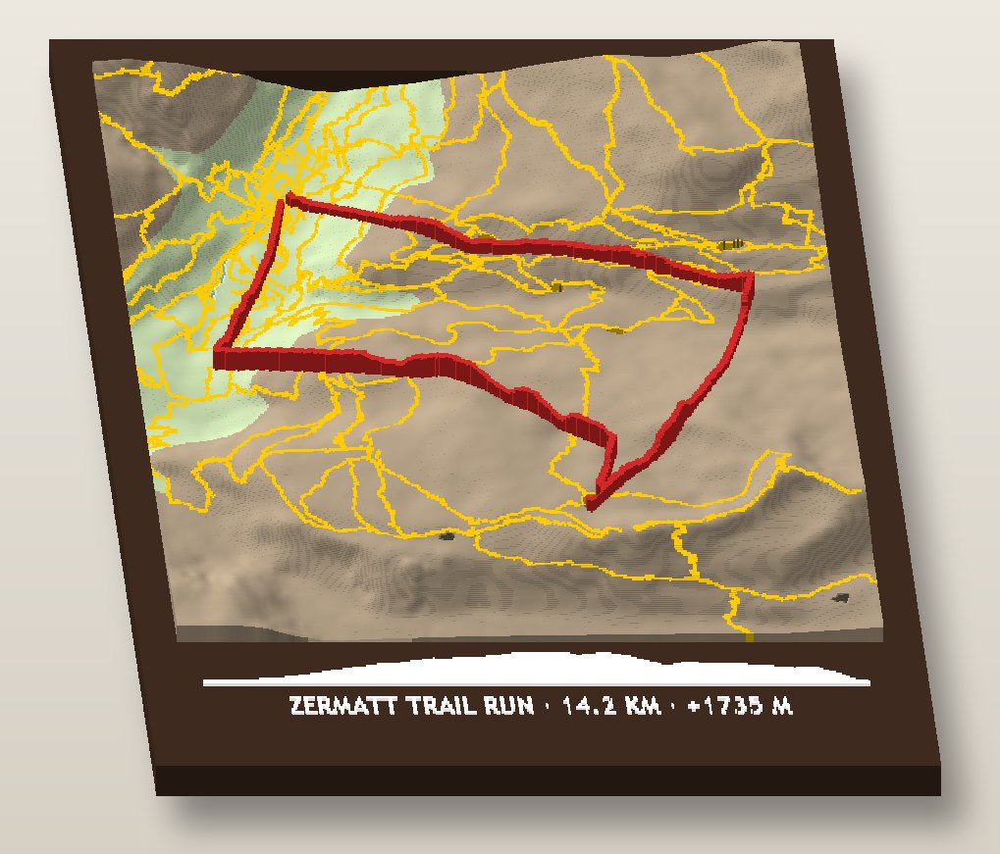</figure>
  <div class="text">
    <h2>Frame with an elevation profile</h2>
    <div class="tags"><span class="tag e-small">Small change</span><span class="tag">Alpine hiking palette</span></div>
    <p>Today's poster, with one addition: the caption bar carries the run's elevation profile as a raised silhouette in the caption colour. The climb to the Riffelsee and the long descent read at a glance, under the map that shows where they happened.</p>
    <dl><dt>Fits</dt><dd>Every theme, every sport. Trail runs and climbs benefit most.</dd>
    <dt>Print</dt><dd>Same three files. The profile is part of the white caption body, so no new colour and no extra filament change.</dd></dl>
  </div>
</section>

<section id="medal" class="form">
  <figure>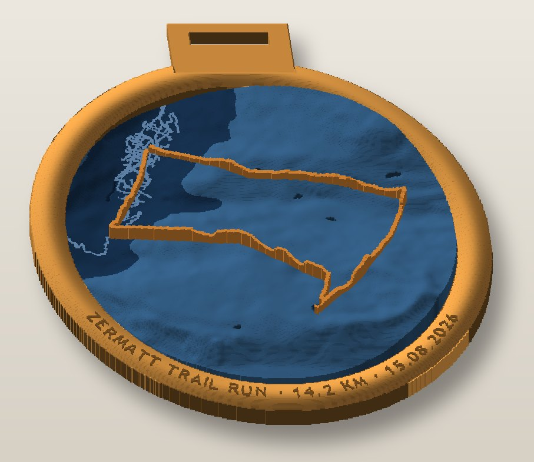</figure>
  <div class="text">
    <h2>Finisher medal</h2>
    <div class="tags"><span class="tag e-medium">Medium</span><span class="tag">Finisher-medal palette</span></div>
    <p>A round relief inside a domed bronze rim, the race name and date running around the edge, a tab with a slot for a ribbon. It hangs from a ribbon next to the real medal, or flat on the wall.</p>
    <dl><dt>Fits</dt><dd>Marathons and any race with a finish line. The strongest gift story in the set. Generic medal look, no race logos.</dd>
    <dt>Print</dt><dd>The rim replaces the square frame and is printed the same way; the round relief plate drops in. Up to about 200 mm across with the tab. Text on an arc needs a new layout routine.</dd></dl>
  </div>
</section>

<section id="ribbon" class="form">
  <figure>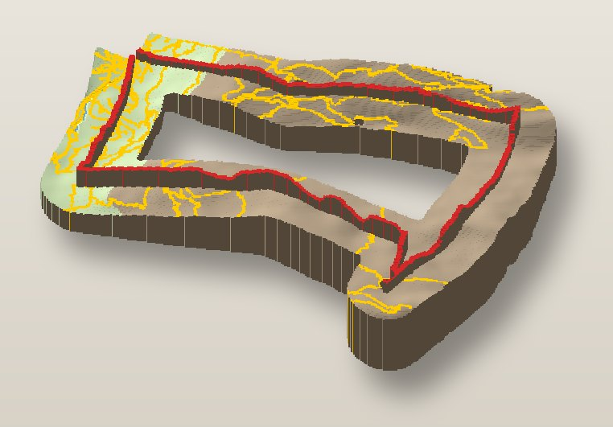</figure>
  <div class="text">
    <h2>Route ribbon</h2>
    <div class="tags"><span class="tag e-medium">Medium</span><span class="tag">Alpine hiking palette</span></div>
    <p>Only the land you crossed. The relief is a band about 13 mm either side of the route, so the object itself takes the shape of the run: a loop becomes a ring, a point-to-point becomes a strip. It floats on the wall without a frame.</p>
    <dl><dt>Fits</dt><dd>Trail runs, hikes, loops with a strong shape.</dd>
    <dt>Print</dt><dd>One relief file, no frame. The caption moves to a small tag or the side wall. Keyhole slots on the back for hanging.</dd></dl>
  </div>
</section>

<section id="terraces" class="form">
  <figure>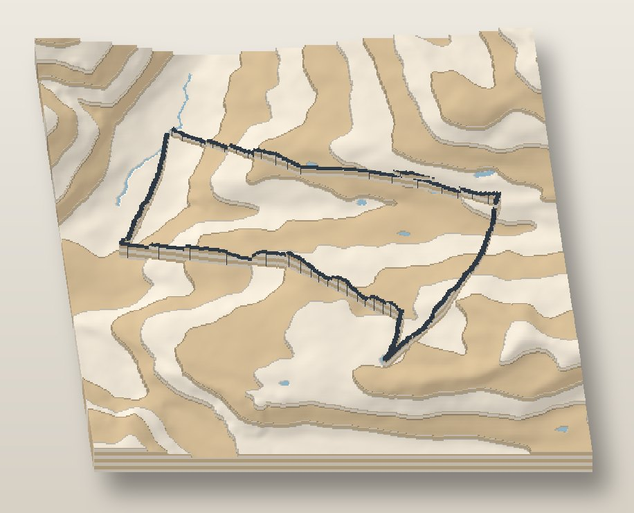</figure>
  <div class="text">
    <h2>Terraced layers</h2>
    <div class="tags"><span class="tag e-small">Small change</span><span class="tag">Scandinavian oak palette</span></div>
    <p>The terrain as stacked layers, like a laser-cut architectural model, with two wood tones alternating from layer to layer. The steps are the contour lines.</p>
    <dl><dt>Fits</dt><dd>Living rooms: oak, linen, Japandi. Needs a hilly route; a flat city gets only one or two layers.</dd>
    <dt>Print</dt><dd>Each terrace is whole layers of one colour, so the filament only changes at each step, around 9 times, instead of on most layers. Much faster and cheaper than today's relief.</dd></dl>
  </div>
</section>

<section id="fins" class="form">
  <figure>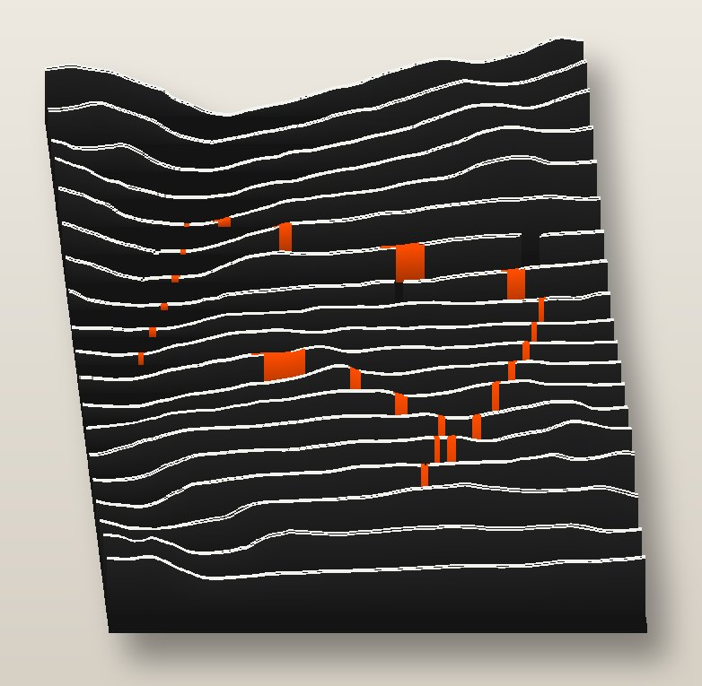</figure>
  <div class="text">
    <h2>Ridgeline fins</h2>
    <div class="tags"><span class="tag e-medium">Medium</span><span class="tag">Dark mode palette</span></div>
    <p>Parallel slices of the terrain stand up as thin fins, like the record cover of stacked radio pulses. The route shows as an orange mark where it crosses each fin.</p>
    <dl><dt>Fits</dt><dd>Music and design rooms, dark-mode buyers. The most graphic object in the set.</dd>
    <dt>Print</dt><dd>Fins need to be at least 1.2 mm thick. Tall fins wobble on the A1's moving bed, so either cap them near 40 mm or print them flat and slot them into a base as a kit. The orange marks add small colour regions on many layers; holes or notches instead would keep it one colour.</dd></dl>
  </div>
</section>

<section id="island" class="form">
  <figure>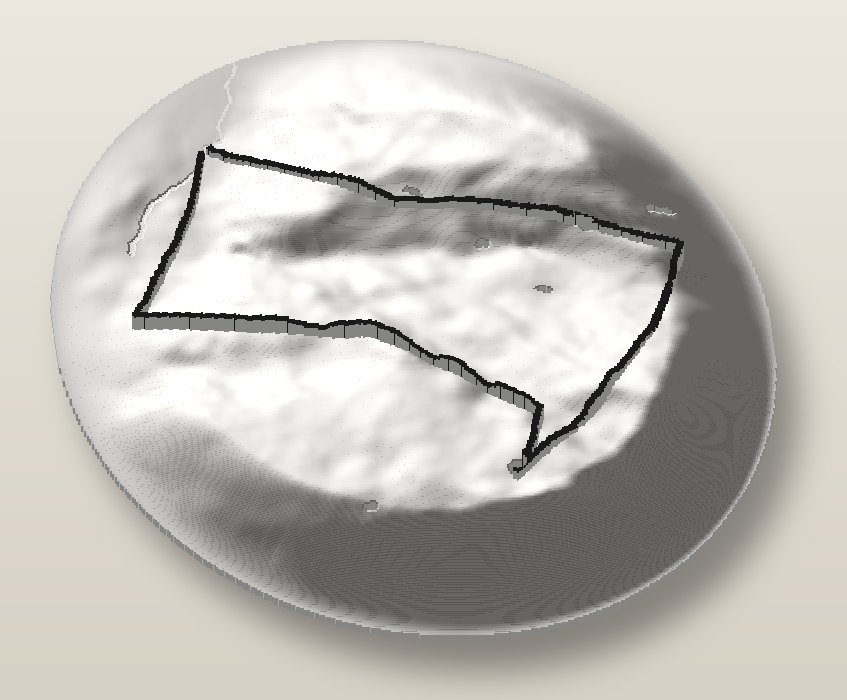</figure>
  <div class="text">
    <h2>Floating island</h2>
    <div class="tags"><span class="tag e-small">Small change</span><span class="tag">Gallery white palette</span></div>
    <p>No frame. The mountains rise out of a round plinth and fade into its edge, like a museum model. All white, with the route in black as the only line.</p>
    <dl><dt>Fits</dt><dd>Minimal rooms, shelves, desks. Works best on mountain routes.</dd>
    <dt>Print</dt><dd>One file, two filaments, and colour changes only where the route wall is. Stands on its own or hangs from a keyhole.</dd></dl>
  </div>
</section>

<section id="contours" class="form">
  <figure>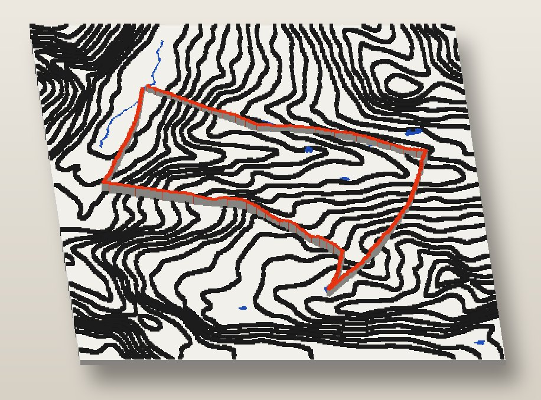</figure>
  <div class="text">
    <h2>Contour line art</h2>
    <div class="tags"><span class="tag e-small">Small change</span><span class="tag">Bauhaus palette</span></div>
    <p>A flat plate with raised contour lines every 80 m, the lakes inlaid in blue and the route standing up in red. It reads like a drawing, and it stays readable at the small size.</p>
    <dl><dt>Fits</dt><dd>Bauhaus, chalk, graphic interiors. In a flat city the streets take the place of the contours.</dd>
    <dt>Print</dt><dd>The plate is one colour; the second colour only appears in the top few layers. The fastest multi-colour form here.</dd></dl>
  </div>
</section>

<section id="block" class="form">
  <figure>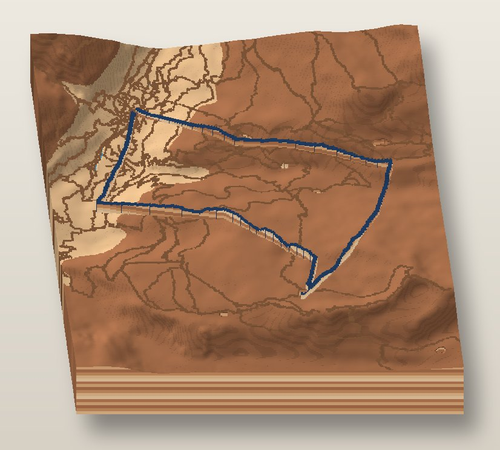</figure>
  <div class="text">
    <h2>Desk block</h2>
    <div class="tags"><span class="tag e-medium">Medium</span><span class="tag">Desert sandstone palette</span></div>
    <p>A 30 mm slab with the terrain on top and sandstone strata running round its sides, like a core sample. A paperweight or bookend for the desk.</p>
    <dl><dt>Fits</dt><dd>Offices, desks, the nature palettes.</dd>
    <dt>Print</dt><dd>The frame becomes a deep tub printed in colour bands by height, about 10 changes over 30 mm. Today's relief plate drops in on top. More filament and time than a poster.</dd></dl>
  </div>
</section>

<section id="hex" class="form">
  <figure>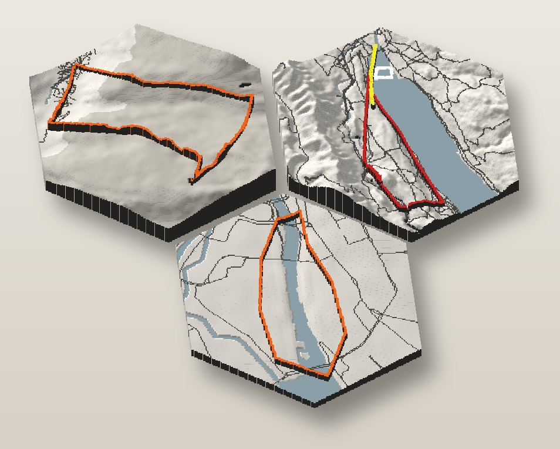</figure>
  <div class="text">
    <h2>Hexagon collection</h2>
    <div class="tags"><span class="tag e-medium">Medium</span><span class="tag">Greige and signal orange palette</span></div>
    <p>One hexagon per race, all in the same palette, tiling on the wall. Shown here: the Zermatt trail run, the Zürich triathlon and the city 5K. The customer comes back after the next race and the wall grows.</p>
    <dl><dt>Fits</dt><dd>Runners with a season of races, parkrun regulars, club gifts. Repeat orders built into the product.</dd>
    <dt>Print</dt><dd>A hexagonal relief without a frame, about 120 to 200 mm across. The caption goes on the edge or a small strip. A printed spacing jig keeps the gaps even on the wall.</dd></dl>
  </div>
</section>

<section id="triptych" class="form wide">
  <figure>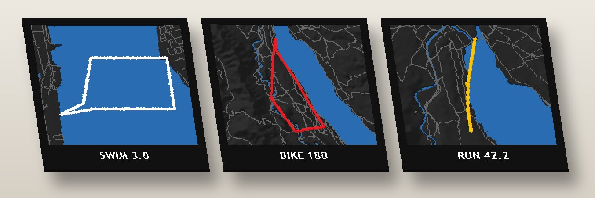</figure>
  <div class="text">
    <h2>Triathlon triptych</h2>
    <div class="tags"><span class="tag e-medium">Medium</span><span class="tag">Triathlon palette</span></div>
    <p>Three panels hung side by side, one per leg, each at its own zoom. The swim becomes a real lake course instead of a small square beside a 180 km ride, and each panel carries its own distance.</p>
    <dl><dt>Fits</dt><dd>Triathlon and duathlon orders.</dd>
    <dt>Print</dt><dd>Three relief jobs and three frames per order, roughly three times the print time. The tool runs once per leg with its own map area.</dd></dl>
  </div>
</section>

<section id="litho" class="form">
  <figure>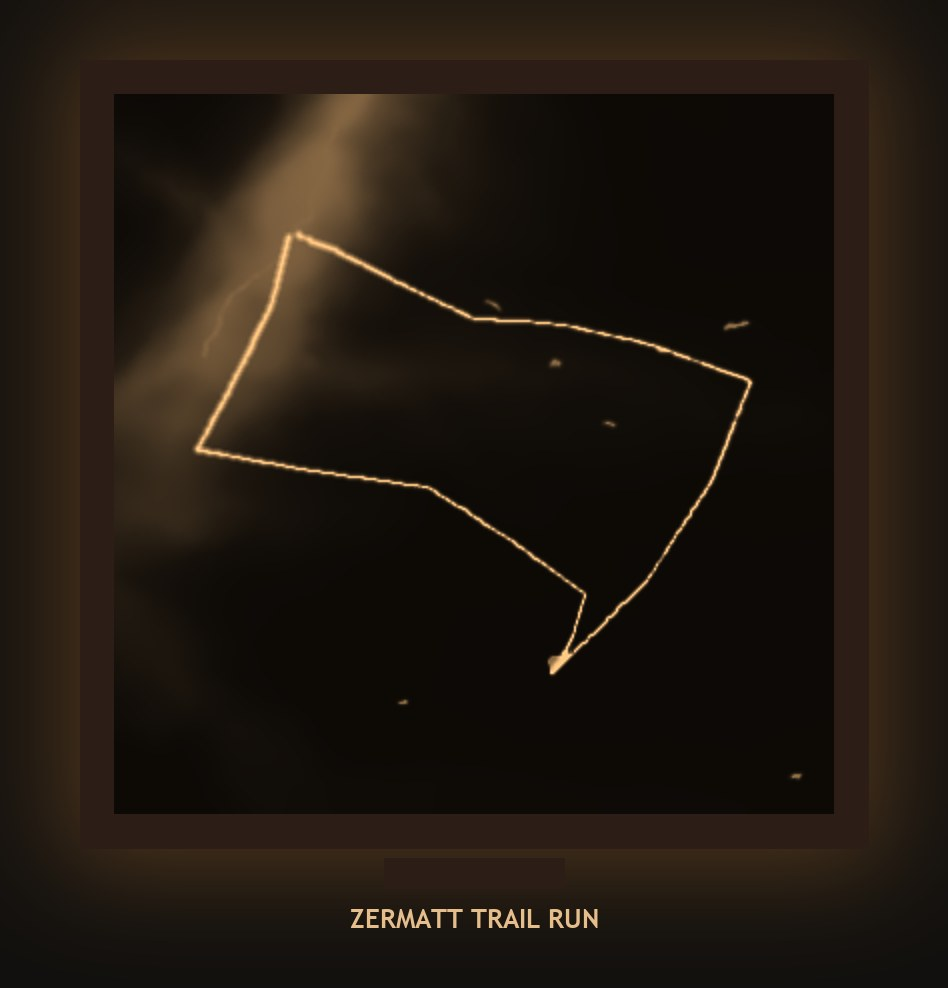</figure>
  <div class="text">
    <h2>Lithophane light</h2>
    <div class="tags"><span class="tag e-small">Small geometry, one bought part</span><span class="tag">White PLA only</span></div>
    <p>A thin white panel lit from behind. Where the plastic is thin the light comes through, so the valleys glow, the peaks stay dark and the route is the brightest line. A lamp for the room rather than a poster.</p>
    <dl><dt>Fits</dt><dd>Gifts, bedrooms, children's rooms. Works with every activity.</dd>
    <dt>Print</dt><dd>One colour, no AMS. The panel is 0.8 to 4 mm thick. Needs an LED backlight frame, a bought part.</dd></dl>
  </div>
</section>

<section id="compare" class="form wide">
  <div class="text">
    <h2>How the forms compare</h2>
    <p>Against today's 216 mm relief, which changes filament on most layers.</p>
  </div>
  <div class="tablewrap">
  <table>
    <thead><tr><th>Form</th><th>Work in the tool</th><th>Colour changes</th><th>Size limit</th><th>Extra parts or steps</th></tr></thead>
    <tbody>
      <tr><td>Frame + profile</td><td>Small: one silhouette on the chin</td><td>Same as today</td><td>As today</td><td>None</td></tr>
      <tr><td>Finisher medal</td><td>Medium: round rim, arc text</td><td>Same as today</td><td>About 200 mm with tab</td><td>Ribbon, optional</td></tr>
      <tr><td>Route ribbon</td><td>Medium: route mask, no frame</td><td>Same as today</td><td>Route's own extent</td><td>Caption tag, keyholes</td></tr>
      <tr><td>Terraced layers</td><td>Small: steps by height</td><td>Far fewer, about 9</td><td>As today</td><td>None</td></tr>
      <tr><td>Ridgeline fins</td><td>Small geometry</td><td>Few, if marks become notches</td><td>Fin height about 40 mm</td><td>Possibly a slotted kit</td></tr>
      <tr><td>Floating island</td><td>Small: radial fade</td><td>Only on route layers</td><td>About 200 mm round</td><td>None</td></tr>
      <tr><td>Contour line art</td><td>Small: contour edges</td><td>Top few layers only</td><td>As today</td><td>None</td></tr>
      <tr><td>Desk block</td><td>Medium: deep banded tub</td><td>About 10 in the tub</td><td>As today, 30 mm deep</td><td>More filament</td></tr>
      <tr><td>Hexagon collection</td><td>Medium: hex mask, tile caption</td><td>Same as today</td><td>120–200 mm tiles</td><td>Spacing jig</td></tr>
      <tr><td>Triathlon triptych</td><td>Medium: one run per leg</td><td>Three reliefs</td><td>Three panels</td><td>Three frames</td></tr>
      <tr><td>Lithophane light</td><td>Small: inverted thickness</td><td>None, one colour</td><td>As today</td><td>LED backlight frame</td></tr>
    </tbody>
  </table>
  </div>
</section>

<section class="form wide">
  <div class="text"><h2>Where I would start</h2></div>
  <div class="picks">
    <div class="pick"><h3>Contour lines and terraces</h3><p>Both print in a fraction of today's time because the colour changes collapse to a handful, and both suit the room palettes.</p></div>
    <div class="pick"><h3>The finisher medal</h3><p>The clearest gift for race finishers, and the rim is the frame in another shape.</p></div>
    <div class="pick"><h3>The hexagon collection</h3><p>The only form that brings the same customer back after every race.</p></div>
  </div>
</section>
</main>
